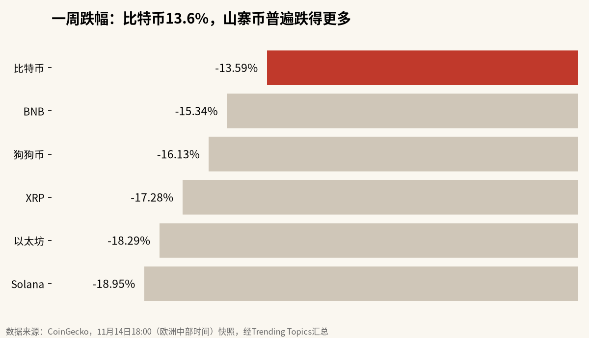
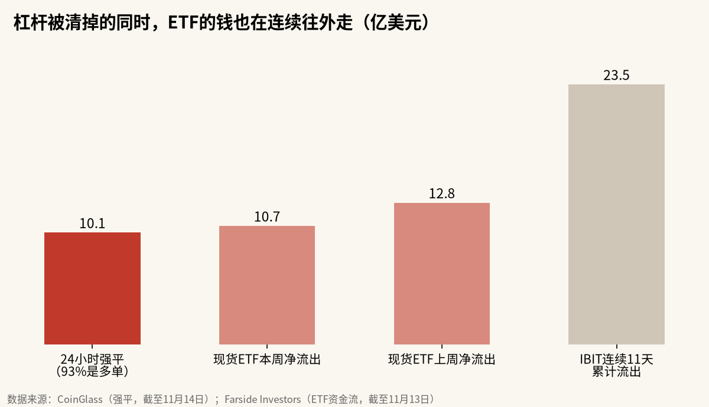

没点卖出，仓位却没了：比特币跌穿6.5万那天，超过19.5万人被交易所强行平仓
周六美股关门、ETF不报数，24小时里约10.1亿美元仓位被强平，93%是押涨的多单；最近一轮下跌的四个小时，就清掉了5.53亿美元。
周六下午，美国股市关着门，现货比特币ETF也不报资金流。这是一周里最没人接盘的时段。
比特币就在这个时候跌穿了6.5万美元。最近一轮下跌只用了四个小时，CoinGlass统计被强制平掉的仓位约5.53亿美元。
谁在砸？翻遍数据，找不到哪个巨鲸大笔卖出的痕迹。砸下来的是两样东西：借钱加上去的杠杆，和市场对12月加息的押注。
按CoinGecko在欧洲中部时间周六18点的快照，比特币报65,080美元，一周跌13.59%，离去年10月的高点少了将近一半。24小时内强平约10.1亿美元，93%是押涨的多单；美国现货比特币ETF截至周五的一周净流出10.7亿美元。Coinbase机构业务的解释是，市场已经把12月加息完全定价。
短线反弹随时可能出现，可只要周一以后ETF还在流出，反弹就只是反弹。
先把几个词说清楚
杠杆，就是借钱放大仓位。拿1万美元本金开10倍杠杆，能买10万美元的比特币，涨跌都按10万美元算。
多单押涨，空单押跌。永续合约是一种没有到期日的合约，常被用来加杠杆做多或做空。
强平，也叫爆仓。价格往不利的方向走，亏损快把本金吃光时，交易所不等你同意，直接替你把仓位卖掉。一张多单被强平，市场上就多出一笔卖单。
现货比特币ETF，是在美股账户里就能买的比特币基金。赎回的钱多过新买进的钱，叫净流出，基金这边就得卖出或少买比特币。
加息定价，是说期货价格里已经写进了「美联储会加息」的预期。完全定价，就是价格里几乎只剩「会加」这一种结果。
一周跌了13.6%，山寨币跌得更狠
65,080美元，24小时跌5.33%，7天跌13.59%。比特币已经跌穿200周均线。这条线是过去200周价格的平均值，在6.8万美元附近，很多长线资金拿它当牛熊分界。

以太坊一周跌了18.29%，报1,814美元；Solana跌18.95%，XRP跌破1美元。山寨币跌得比比特币狠，说明是整个市场在降杠杆，没有哪一个币单独出了事。
拉长看更难受。去年10月的高点约12.6万美元，按65,080美元算，回撤48.3%，差不多腰斩。Peter Schiff周六专门列了一组数：中期选举以来比特币跌15%，今年以来跌25%，黄金同期只跌了1%和10%。他一向看空比特币，这组对比倒是没算错方向。
算一笔账：一张多单是怎么被清掉的
下面的仓位是简化示意：不追加保证金、不调整仓位。价格和跌幅用的是这次的真实数字。
第一步，开仓。一位交易员一周前在约7.5万美元开了一张10倍多单（7.5万是按65,080美元和一周13.59%的跌幅倒推的），本金1万美元，仓位10万美元。
第二步，价格往下走。10倍杠杆下，价格每跌1%，本金就亏10%。跌到约6.75万美元，也就是跌10%，1万美元本金亏完。交易所通常不会等到亏成零才动手，所以爆仓线还要更早一些。
第三步，交易所替他平仓。他本人没想卖，这张多单照样被强行平掉，变成市场上的一笔卖单。
第四步，往下传。杠杆越高，越早被清：20倍的仓位跌5%左右就没了，10倍在10%左右。前一批被清掉的卖单把价格压低，正好碰到下一批的爆仓线。一周跌13.6%，一周前开的10倍多单已经撑不住。
第五步，周末放大。周六美股休市，ETF不报数，接盘的人少，同样一笔卖单能砸出更大的跌幅。
把这五步放大成真实规模：24小时强平约10.1亿美元，按93%算，其中约9.4亿美元是多单，涉及超过19.5万名交易者。彭博援引CoinGlass对28家期货交易所的统计说，过去一年比特币24小时爆仓额只有3次超过10亿美元。
强平只发生一次，ETF的钱天天在走

杠杆清完就清完了。ETF流出是连着的。
Farside的数据显示，美国现货比特币ETF截至周五的一周净流出10.7亿美元，前一周流出12.8亿美元，两周合计约23.5亿美元。周五当天流出1.854亿美元，已经是连续第七个交易日。贝莱德的IBIT连续11个交易日流出，累计约23.5亿美元。
链上分析师Ted Pillows说得很直白：现货在卖，永续合约在做空，什么都没变。我看完这两组数据，感受也差不多。爆仓把价格砸下去，ETF的持续流出让它弹不起来。
钱为什么走：利率和美元
Coinbase机构业务在周报里把原因归到美联储，跟币安被盗关系不大。10月非农就业和CPI通胀数据都超预期，市场已经完全定价12月加息25个基点，未来12个月的加息预期合计64个基点。一个基点是0.01个百分点。
利率往上，比特币的处境就别扭了。它不生息。存款和美债的收益涨了，手里拿着比特币，等于放弃的那份利息也跟着涨。美元指数周五站上103，是2025年4月以来最高。
X上也有人反着看。比特币杂志转述了《美元终局》作者Roberto Rios的观点：高利率逼政府借更多钱，长期利好比特币。这个逻辑说的是几年的尺度，管不了下周的价格。
币安被盗和英伟达，各算多少
X上最常见的两个解释，一个是币安被盗，一个是英伟达。
Ted Pillows周六算了一笔：币安被盗17天，比特币跌了1.7万美元，「一天跌1000美元」。时间上对得上，Coinbase机构业务的判断却正好相反，认为被盗只是情绪催化，真正压价的是利率预期。我更倾向后者。被盗是一次性事件，ETF连续七个交易日流出不是。
英伟达那条线更隐蔽。Fundstrat的Tom Lee周六列下跌原因，第一条就是AI、半导体和英伟达的抛售。英伟达本周跌了13%，创始人黄仁勋离任，科技股的风险偏好整体往下走。比特币这两年和纳斯达克联动越来越紧，股票那边去杠杆，币这边很难置身事外。
还有一个容易被忽略的卖家。链上数据显示，以太坊基金会关联地址10月26日以来累计卖出7,785枚ETH，周六又通过CoWSwap卖了2,500枚。量不大，可在没人接盘的周末，任何卖单都会被放大。
三条线放在一起：利率是底色，英伟达加快了风险偏好的下降，被盗事件让大家更快想起了交易所风险。
多空两边，各有一条硬道理
看多的一方有两条硬理由。一是超卖。相对强弱指数（RSI）衡量最近涨跌的力度，比特币最近在25左右，低于30往往先有反弹。二是存量还在。美国现货ETF自2024年1月上线以来，累计净流入仍有约550亿美元，两周流出二十多亿，大头没走。
情绪也到了极端。加密恐惧贪婪指数周六跌到13，周五是20，周四28。中文圈有交易员说62—66k是之前买盘最集中的区间，判断11月下半月有反弹，但「仅限于73k」，66—70k吃了就跑。
看空的一方盯着下一个价位。周五低点下面，是8月中旬约64,700美元的收盘价，再往下是夏季低点约58,600美元。预测市场Polymarket上，年底前跌破5万美元的概率已经高过重回9万美元。
X上这一天的声音整体偏空。我们记下的11位里，看多4位、看空5位、中性2位。看多的还有人说「每次下跌都有人喊归零，恐慌时买入才是最好的时机」，也有人拿Strategy的STRC作对比：比特币过去一个月跌17.3%，STRC价格基本持平、总回报+1.0%。看空的有人说跌破5万美元后可能很快回到2022年低点。中性的一位认为纳指已经企稳，比特币短期难大涨、下跌空间也不大，要等降息预期才有牛市。
两边都对：技术上该弹了，资金面还没转。
日程排得很满：ETF、纪要、PCE和指数调仓
我的判断是，价格已经把加息定价得差不多了，杠杆也清了一大半，可它还缺一个让新钱进场的理由。日程排得很满：
| 时间 | 事件 | 看什么 |
|---|---|---|
| 周一 | ETF数据恢复 | 资金是继续流出还是转为流入 |
| 周三 | 美联储10月会议纪要公布 | 加息预期有没有变化 |
| 再过一周 | PCE通胀数据 | 美联储最看重的通胀指标 |
| 11月底 | Strategy被剔出MSCI指数正式生效 | 被动资金跟着调仓 |
Strategy是最大的上市持币公司。被剔出指数后，跟踪指数的被动资金要按规则卖出它的股票。
如果周一开始ETF连续几天转为净流入，同时价格守住6.47万美元一线，这次大概率是一次杠杆出清后的阶段底。反过来，ETF流出延续、价格跌破5.86万美元的夏季低点，看空5万美元的那批人就不是在吓人了。
这对普通投资者意味着什么
这一轮比起盯价格反弹，更该盯ETF的资金流。 爆仓已经发生过一次，砸出了这个价；接下来价格能不能站住，ETF的钱会不会回来是最直接的信号。
用了杠杆的人，先把自己的爆仓线算清楚。上面那笔账里，10倍杠杆只要跌10%就清零，而这次一周就跌了13.6%。周末接盘的人少，同样的卖单砸得更深，这个风险要算进去。
只买现货、不加杠杆的人，可以等周一的ETF数据和周三的会议纪要出来再做决定。
几点说明
回撤48.3%按65,080美元和约12.6万美元高点计算，ETF两周流出是两周数字相加，约9.4亿美元多单按10.1亿美元乘93%计算，一周前约7.5万美元按一周跌幅倒推；「算一笔账」里的仓位是示意。62—66k买盘区间、73k反弹上限、跌回2022年低点，都是个人观点或预测。
免责声明：本文数据来自CoinGecko、CoinGlass、Farside Investors及相关媒体报道，回撤幅度为按公开价格计算，不构成任何投资建议。
X 上怎么看
结论 · 偏空：杠杆出清、ETF连续流出、加息被完全定价，多头只剩超卖和长期叙事
▲ 看多4 位
▼ 看空5 位
观点为 X 用户当日公开帖子的中文摘要，忠于原文但有删减；标「未核实」的为预测、个人推测或单一来源说法。立场为人工判断。
数据来源
- 价格与7天涨跌为CoinGecko周六18:00（欧洲中部时间）快照；强平数据来自CoinGlass；ETF资金流来自Farside Investors，均经Trending Topics汇总。
- 过去一年爆仓额超过10亿美元的次数、周六亚洲时段低点来自彭博援引CoinGlass的中文转述。
- 12月加息定价与64个基点的说法来自Coinbase机构业务周报的中文转述。
- 回撤48.3%为按65,080美元和约12.6万美元高点计算；ETF两周流出为两周数字相加。
- 62—66k买盘区间、73k反弹上限为个人交易观点。
- 以太坊基金会卖币数量来自链上监测账号的转述。
- 约9.4亿美元多单为按24小时强平10.1亿美元×93%计算；一周前约7.5万美元为按65,080美元和13.59%跌幅倒推。
- https://www.trendingtopics.eu/bitcoin-65000-dollars-liquidations/
- https://x.com/BitcoinMagazine/status/2121646733650190650
- https://x.com/wublockchain12/status/2121466544031154415
- https://x.com/wublockchain12/status/2121386074534740272
- https://x.com/TedPillows/status/2121582506797342748
- https://x.com/TedPillows/status/2121509746431721574
- https://x.com/PeterSchiff/status/2121649198873420191
- https://x.com/BitcoinMagazine/status/2121614536721789083
- https://x.com/ShiGuangYuYanJi/status/2121549111258124338
- https://x.com/Polymarket/status/2121665079724658946
- https://x.com/TedPillows/status/2121644080992333953
- https://x.com/fundstrat/status/2121647654614519841
- https://x.com/PANewsCN/status/2121436852083401208
- https://x.com/wublockchain12/status/2121635014878351659